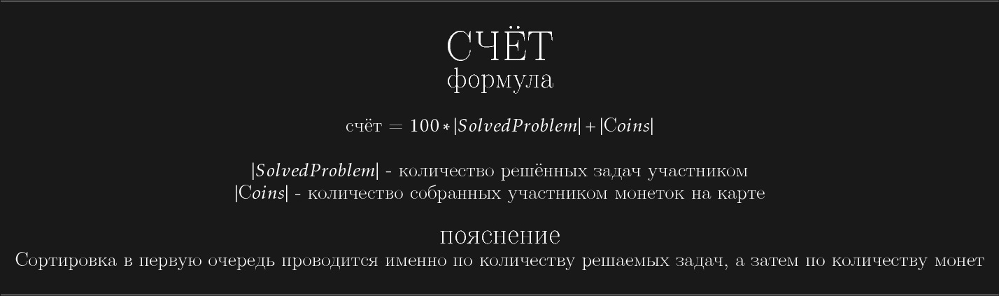

\hline \\
{\Huge СЧЁТ}\\
{\Large формула}\\ \\
счёт = $100*|SolvedProblem| + |Сoins|$ \\ \\
$|SolvedProblem|$ - количество решённых задач участником\\
$|Сoins|$ - количество собранных участником монеток на карте\\ \\
{\Large пояснение}\\
Сортировка в первую очередь проводится именно по количеству решаемых задач, а затем по количеству монет\\ \\
\hline\\
{\Huge ШТРАФ}\\
{\Large формула}\\ \\
штраф = $1000 \cdot |SolvedProblem|-
\displaystyle
\sum_{i \in SolvedProblem}
\begin{cases}
\Bigl\lfloor
\left(1 -
\frac{time_i - time_{min_i}}{time_{max_i} - time_{min_i}}
\right)
+
\frac{time_i - time_{min_i}}{time_{max_i} - time_{min_i}}
\cdot
\left(
\frac{250}{|SolvedProblem_i|}+750
\right)
\Bigr\rfloor
, & \mbox{if } (time_{max_i} \neq time_{min_i}) \mbox{ and } (Player \notin Admin)\\
1000, & \mbox{otherwise} \end{cases}$\\\\
$|SolvedProblem|$ - количество решённых задач участником \\
$SolvedProblem$ - решенные задачи участником\\
$|SolvedProblem_i|$ - количество участников решивших i-ую задачу\\
$time_i$ - время решения участником i-ой задачи в астрономических секундах прошедшее с полуночи 1 января 1970 года\\
$time_{min_i}$ - время первого решения (среди всех участников) i-ой задачи в астрономических секундах прошедшее с полуночи 1 января 1970 года\\
$time_{max_i}$ - время последнего решения (среди всех участников) i-ой задачи в астрономических секундах прошедшее с полуночи 1 января 1970 года\\ \\
{\Large пояснение}\\
Если произошло совпадении счёта, то в ход идёт штраф\\ Штраф зависит от времени решения задачи относительно других участников (количество попыток не влияет)\\\fcolorbox{red}{yellow}{\textcolor{black}{Таким образом всегда выгоднее решить задачу (и желательно как можно быстрее)}}